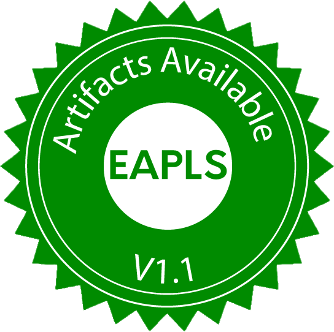
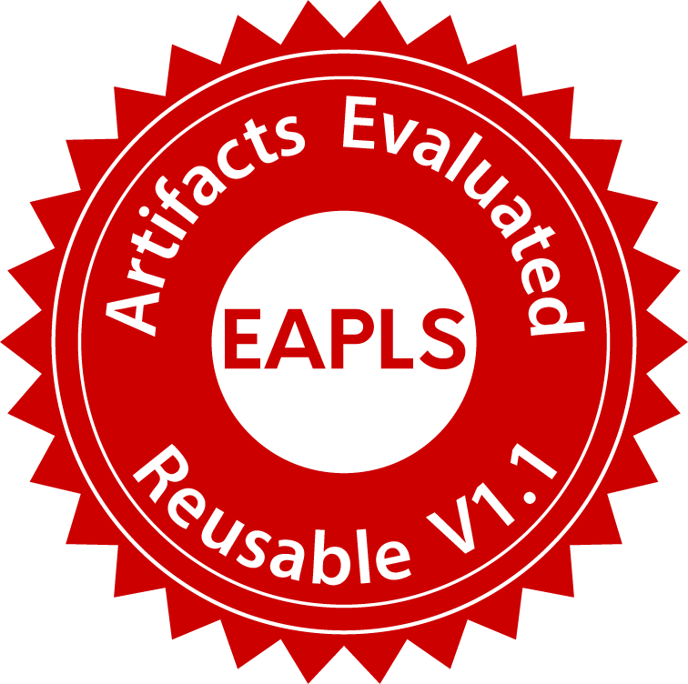

Mimosa: A Language for Asynchronous Implementation of Embedded Systems Software
Nikolaus Huber (1), Susanne Graf (1, 2), Philipp Rümmer (1, 3), Wang Yi (1)
(1) Uppsala University, Uppsala, Sweden
(2) Université Grenoble Alpes, CNRS, Grenoble INP, VERIMAG, France
(3) University of Regensburg, Regensburg, Germany
step print_int (_ : int) --> ()
step add (x, y) --> z { z = x + y }
step split x --> (o1, o2, o3) { o1, o2, o3 = x, x, x }
channel a : int = { 1 }
channel b : int = { 0 }
channel c : int
channel d : int
node add implements add (a, c) --> (b) every 10ms
node split implements split (b) --> (a, d, c) every 10ms
node print implements print_int (d) --> () every 10ms
step edge_detect (in : bool) --> (out : bool?)
{
pre_in = in -> pre in;
out = if !pre_in && in then (Some true)
else if pre_in && !in then (Some false)
else None;
}
channel a : bool
channel b : bool
node edge implements edge_detect (a) --> (b?) every 100ms
$$\small
\begin{align*}
\begin{array}{rcll}
e : \text{Expression} & ::= & x & \text{Variable} \\
{} & | & c & \text{Constant} \\
{} & | & e\bm{,}\, \ldots\bm{,}\, e & \text{Tuple} \\
{} & | & \textbf{pre}\, e & \text{Pre} \\
{} & | & e\, \bm{\rightarrow}\, e & \text{Initialized-by} \\
{} & | & e\, \textbf{fby}\, e & \text{Followed-by} \\
{} & | & e\, e & \text{Application} \\
{} & | & \textbf{if}\, e\, \textbf{then}\, e\, \textbf{else}\, e & \text{Conditional} \\
{} & | & \textbf{None} & \text{None} \\
{} & | & \textbf{Some}\, e & \text{Some} \\
{} & | & \textbf{either}\, e\, \textbf{or}\, e & \text{Option match} \\
p : \text{Pattern} & ::= & x & \text{Variable pattern} \\
{} & | & p\bm{,}\, \ldots\bm{,}\, p & \text{Tuple pattern}
\end{array}
\end{align*}$$
Environments
$$\Gamma \quad \subseteq \quad \textbf{Names} \times \textbf{Values}$$
Projection
\[\begin{align*}(x \mapsto 1, y \mapsto 2) \Downarrow_x\; &=\; 1 \\
(x \mapsto 1, y \mapsto 2) \Downarrow_{(x, y)}\; &=\; (1, 2)\end{align*}\]
Update
\[\begin{align*}(x \mapsto 1, y \mapsto 2) \Uparrow_z^3\; &=\; (x \mapsto 1, y \mapsto 2, z \mapsto 3) \\
(x \mapsto 1, y \mapsto 2) \Uparrow_{(x, y)}^{(3, 4)}\; &=\; (x \mapsto 3, y \mapsto 4)\end{align*}\]